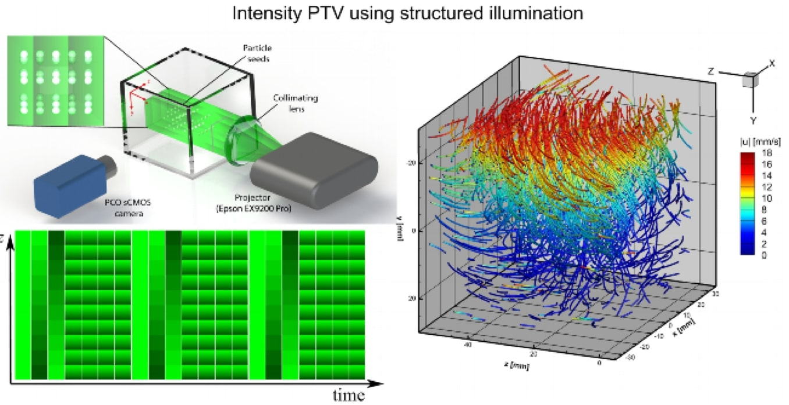

Single‑camera 3D PTV using
particle intensities and structured light
Andres A. Aguirre-Pablo, Abdulrahman B. Aljedaani, Jinhui Xiong, Ramzi Idoughi,
Wolfgang Heidrich, Sigurdur T. Thoroddsen
Experiments in Fluids (2019)

Abstract
We use structured monochromatic volume illumination with spatially varying intensity profiles, to achieve 3D intensity particle
tracking velocimetry using a single video camera. The video camera records the 2D motion of a 3D particle field within
a fluid, which is perpendicularly illuminated with depth gradients of the illumination intensity. This allows us to encode
the depth position perpendicular to the camera, in the intensity of each particle image. The light intensity field is calibrated
using a 3D laser-engraved glass cube containing a known spatial distribution of 1100 defects. This is used to correct for the
distortions and divergence of the projected light. We use a sequence of changing light patterns, with numerous sub-gradients
in the intensity, to achieve a resolution of 200 depth levels.
Paper
paper [Aguire-Pablo2019SingleCameraPTV.pdf (6.9MB)]